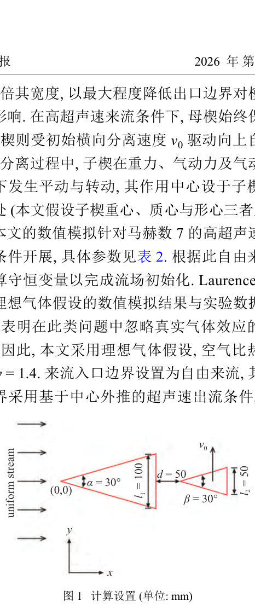
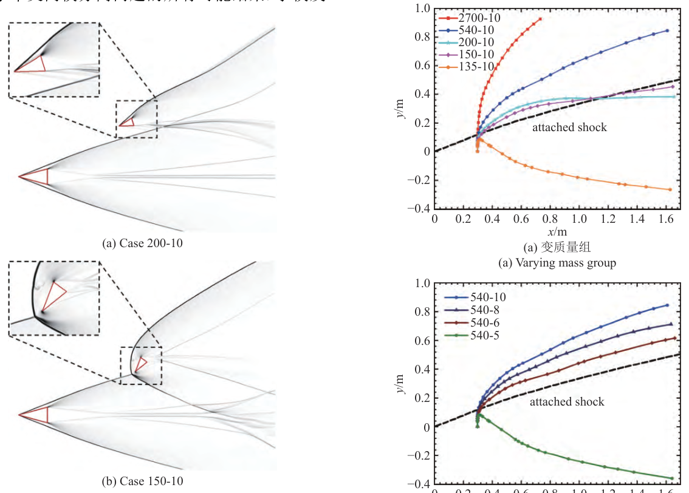
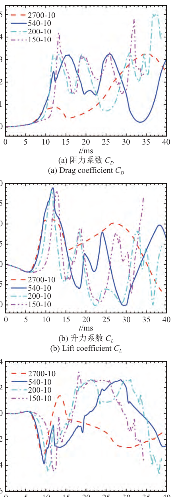
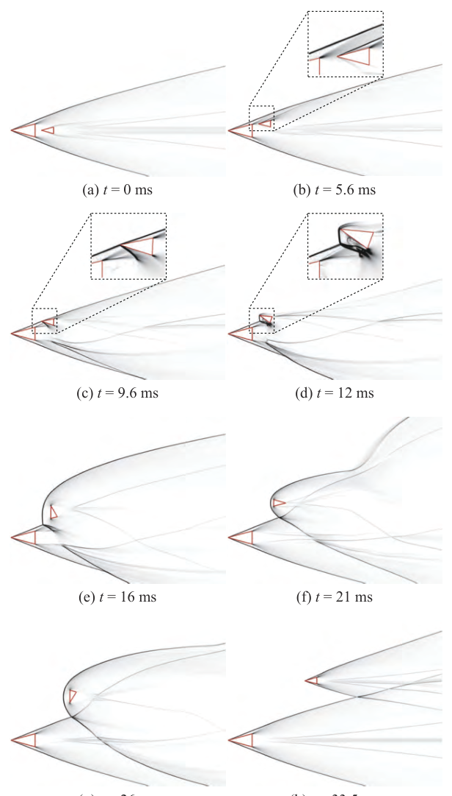

01中文摘要
将高超声速尾退弹射分离简化为串联两楔无黏分离绕流，采用数值模拟研究马赫7来流下两楔动态分离过程。分离体运动由重叠动网格技术处理，并与3自由度刚体动力学方程耦合求解。重点分析不同质量和初始横向分离速度下的运动行为与气动特性，厘清非定常波系演化及其与分离体运动的相互影响。分离体相对母体呈逃逸、折返、激波冲浪和反向四种模式；穿越母体附体激波时依次出现激波-膨胀波和激波-激波干扰，下壁面强波系使气动力骤升；成功分离后迎风侧激波在附体激波与弓形激波间转换，阻力、升力呈周期性振荡。
原始摘要（英文/原文）
高超声速多体飞行器因低成本、高效率等优势常作为可重复使用天地往返运输系统方案之一,其中高超声速尾退弹射分离是多体飞行器分离方案的重要研究方向.在高超声速条件下,多体分离过程往往伴随复杂的波系干扰,直接影响分离安全性与姿态稳定性.本文将高超声速尾退弹射分离过程简化建模为串联两楔无黏分离绕流,采用数值模拟方法研究了Ma=7来流条件下两楔的动态分离过程.分离体运动基于重叠动网格技术,由流体控制方程与3自由度刚体动力学方程组的耦合求解确定.重点分析了不同质量与初始横向分离速度条件下分离体的运动行为和气动特性,厘清了分离过程中非定常波系结构演化,并探讨了流场非定常波系结构与分离体气动特性及运动行为的相互影响.研究发现,分离体相对母体的运动呈现4种典型模式:逃逸、折返、激波冲浪及反向.除反向情况外,随着质量(或初始分离速度)的减小,分离体轨迹逐渐趋近母体头部激波.在穿越母体附体激波过程中,分离体周围流场依次出现激波-膨胀波干扰与激波-激波干扰,尤其是其下壁面附近的强波系干扰导致气动力急剧升高.成功分离后,分离体迎风侧激波形态在附体激波与弓形激波之间交替转换,导致气动力产生周期性振荡,具体表现为阻力与升力系数分别呈现类余弦与类正弦函数的周期性变化规律.
02阅读说明
数值模拟研究（中文期刊《力学学报》2026, 58(2):344-358）。bundle 共16页标记，但正文在 PDF 第12页（期刊p355）中途截断；已按允许范围用原 PDF 第12–16页补齐波系分析与结论。图1–11、表1–3齐全，图件可读；表3在 bundle 文本层有错行，已按表图与正文交叉核对。提取口径：以分离模式、轨迹/气动系数与波系演化的对应关系为主线。 文章类型：期刊
03一句话核心与三句话摘要
Ma7串联两楔无黏分离：质量与初速决定逃逸/折返/冲浪/反向四模式，穿越激波引发周期气动振荡。
- 现有多体分离研究多关注两体横向分离，尾退弹射式分离及尾流区动态弹射的非定常气动干扰研究较少。 AI概括
- 将尾退分离简化为二维串联两楔无黏绕流，用重叠动网格耦合求解 Euler 方程与3自由度刚体方程，在 Ma=7 下系统改变子楔质量与初始横向速度。 AI概括
- 子楔运动呈逃逸、折返、激波冲浪、反向四模式；穿越母楔附体激波时依次出现激波-膨胀波与激波-激波干扰，分离后迎风激波在附体/弓形间交替，使 CD 类余弦、CL 类正弦周期振荡。 AI概括
04核心内容清单
| 要点 | 类型 | 重要性 | 原文依据 | 属性 |
|---|---|---|---|---|
| 子楔相对母楔的运动分为逃逸、折返、激波冲浪、反向四类；除反向外其余三种在工程上均视为分离失败。 | 分类框架 | A | 表3、p351 | 原文明确 |
| v0=10 m/s 时，ρm 由2700降至135 kg/m³ 依次出现逃逸(2700、540)、折返(200)、激波冲浪(150)、反向(135)。 | 参数分区 | A | 表3、p351 | 原文明确 |
| 固定 ρm=540 kg/m³ 时，v0 由6降至5 m/s 使子楔从逃逸转为反向；4 m/s 推测同样失败，5–6 m/s 之间行为尚不能判定。 | 参数分区 | A | 表3、p353 | 原文明确 |
| 除反向外，子楔轨迹随质量或初始分离速度减小而逐渐趋近母楔附体激波，更难摆脱激波束缚。 | 轨迹规律 | A | 图7、p352 | 原文明确 |
| 折返与激波冲浪的轨迹都可能出现两个激波交点，仅凭轨迹不能区分，必须结合波系结构。 | 判据辨析 | A | 图7、图6、p352–353 | 原文明确 |
| 穿越母楔附体激波时依次出现激波-膨胀波干扰与激波-激波干扰，下壁面附近强干扰使气动力急升。 | 波系机制 | A | 图11、p355–356 | 原文明确 |
| 成功分离后迎风侧激波在附体与脱体弓形之间交替，导致气动力周期振荡；CD 类余弦、CL 类正弦。 | 气动机制 | A | 图10、p356 | 原文明确 |
| 折返由20–30 ms 持续负升力造成；冲浪则正负升力交替但始终未脱离母楔激波作用范围。 | 模式机理 | A | 图8、图9、p354 | 原文明确 |
| 反向案例阻力明显低于逃逸案例，升力仅前期短时间为正、之后长期为负。 | 气动特征 | B | 图9、p354 | 原文明确 |
| 中等网格（140万、1.5 mm）与细网格在 t<25 ms 基本一致，最大相对误差4.6%，满足网格无关性。 | 数值验证 | A | 图4、p350 | 原文明确 |
| 重案例2700-10 气动力变化平稳，翻滚弱；轻案例转动惯量小、抗俯仰力矩能力弱，发生多次翻滚。 | 物理解释 | B | 图8、p353–354 | 原文明确 |
| 母楔固定、子楔初始横向速度驱动、重力沿 −y，初始流场由定常计算给出。 | 计算设置 | A | 图1、p348 | 原文明确 |
05引言：研究问题与领域缺口
多体分离是系统中各组成部分解除约束后产生相对运动的动力学过程，广泛见于飞机-外挂物、子母弹、多级入轨、整流罩分离及流星体再入等。高超声速尾退弹射分离中，分离体会与母体尾迹的非定常涡、剪切层、压缩/膨胀波及母体激波强烈干扰，波系又在分离体表面反射，显著改变气动力与轨迹，威胁分离安全与姿态稳定。作者综述了国外实验（Passey 等、Laurence 等、Seltner 等、Park 等、Cardona 等）与数值工作（Edge 等、Whalen 等），以及国内风洞捕获轨迹/自由释放实验和数值研究（赵忠良、陶如意、Wang 等、伍彬、Li 等、王粤等）。指出的缺口是：现有工作大多关注两体横向分离，较少关注尾退式分离，尾流场中动态弹射分离的非定常气动干扰研究更少。本文因此选取二维串联两楔无黏分离绕流作为横向弹射分离的简化模型，在 Ma=7 下改变分离体质量与初始横向分离速度，研究波系-气动特性-运动行为的耦合（p344–346）。
06流动条件与几何构型
| 项目 | 数值/描述 | 依据 | 备注 |
|---|---|---|---|
| 来流马赫数 | Ma=7 | 表2、p348 | |
| 来流静压 | p∞=392 Pa | 表2、p348 | |
| 来流静温 | T∞=228 K | 表2、p348 | |
| 来流密度 | ρ∞=5.99 g/m³ | 表2、p348 | 即0.00599 kg/m³ |
| 比热比 | γ=1.4（理想气体，量热完全气体） | 表2、p348 | 作者引 Laurence 等说明忽略真实气体效应影响很小 |
| 母楔几何 | 楔角 α=30°，底边 l1=100 mm | 表1、图1、p348 | 二维、串联、对称线与x轴重合 |
| 子楔几何 | 楔角 β=30°，底边 l2=50 mm | 表1、图1、p348 | |
| 两楔流向间距 | d=50 mm（子楔楔角顶点至母楔底边） | 表1、p348 | |
| 计算域 | x∈[−0.3,1.7] m，y∈[−0.6,1] m；下游出口距子楔约15倍其长度，下侧约12倍其宽度 | p348–349 | |
| 流动模型 | 二维、无黏、可压缩 Euler；未用湍流/转捩模型 | p346 | 无 y+ 与边界层网格要求 |
| 运动设置 | 母楔固定；子楔受初始横向分离速度 v0 向上自由运动，同时受重力、气动力与力矩 | p348 | 重力沿 y 轴负向 |
| 初始状态 | 先算定常流场，再在 t=0 赋予子楔初始横向速度；以子楔获得初速时刻为 t=0 | p347–349 | |
| 固壁边界 | 原文称“固壁边界则设为绝热无滑移壁面” | p349 | 与 Euler 无黏假设存在张力；AI推断实际应为绝热固壁（滑移）条件，需回原文/代码确认 |
| 变质量组 | v0=10 m/s；ρm=2700、540、200、150、135 kg/m³，对应 m=6.298、1.260、0.467、0.350、0.315 kg | 表3、p351 | 形状不变，Izz 随质量等比例变化 |
| 变初速组 | ρm=540 kg/m³；v0=10、8、6、5 m/s | 表3、p351 | |
| 基准子楔参数 | m=6.298 kg，Izz=3.702×10⁻³ kg·m²，v0=10 m/s | p349 | 重心、质心、形心重合 |
07核心现象与关键参数
| 参数 | 定义 | 数值 | 关系/说明 | 依据 |
|---|---|---|---|---|
| 阻力系数 | CD=D/(½ l2 ρ∞ u∞²) | 按式(12)计算并随时间变化 | l2 为子楔底边长度 | 式(12)、p350 |
| 升力系数 | CL=L/(½ h2 ρ∞ u∞²) | 按式(13)计算；y 正向为正升力 | h2 为子楔对应高度（数值文中未提及） | 式(13)、p350 |
| 俯仰力矩系数 | CM=Mz/(½ h2² ρ∞ u∞²) | 按式(14)计算；抬头为负、低头为正 | 式(14)、p350 | |
| 网格量 | 粗/中/细三套 | 80万、140万、220万；基础分辨率2、1.5、1.2 mm | p349 | |
| 网格无关性误差 | 中等与细网格气动系数最大相对误差 | 约4.6%（t>25 ms 后） | p350、图4 | |
| 首次激波干扰时刻 | 子楔头部与母楔附体激波开始作用 | 约 t=10 ms（基准案例） | p349 | |
| 分离完成时刻 | Case 540-10 成功分离 | t=33.5 ms | 图11、p355–356 | |
| 典型波系时刻 | Case 540-10 | 5.6、9.6、12、16、21、26、33.5 ms | 图11、p355–356 | |
| 质量分区（v0=10 m/s） | ρm / m | 2700/6.298 逃逸；540/1.260 逃逸；200/0.467 折返；150/0.350 冲浪；135/0.315 反向 | 表3、p351 | |
| 初速分区（ρm=540） | v0 | 8、6 m/s 逃逸；5 m/s 反向；4 m/s 推测反向 | 表3、p353 | |
| 转动惯量 | Izz | 3.702×10⁻³ kg·m²（对应 m=6.298 kg） | 均匀密度、形状不变时随质量等比例变化 | p349、p351 |
08方法与数据
控制方程为二维可压缩守恒型 Euler 方程(1)(2)，理想气体状态方程(3)(4)，γ=1.4；固体按3自由度刚体动力学式(9)–(11)，重力沿 y 轴负向，气动力/力矩由壁面压强积分式(5)(6)并等效至形心。数值采用有限体积法、二阶 TVD 重构、Minmod 限制器、HLLC 近似 Riemann 求解器；定常阶段用隐式推进+多重网格，收敛判据为各方程残差下降至少3个数量级并稳定、子楔气动力/力矩相对变化低于0.1%；动态阶段用隐式双时间步，每个物理时间步内迭代残差下降3个数量级。重叠网格由覆盖母楔的背景网格与随子楔运动的子网格组成，切割/标记单元形成重叠区，插值二阶，每个物理时间步重建重叠关系；刚体运动用四阶 Runge–Kutta 显式推进。计算终止于两固体碰撞或子楔重叠网格越出计算域。几何为串联等腰楔：母楔 α=30°、底边 l1=100 mm，子楔 β=30°、底边 l2=50 mm，流向间距 d=50 mm；计算域 x∈[−0.3,1.7] m、y∈[−0.6,1] m，下游出口距子楔约15倍其长度。来流 Ma=7、p∞=392 Pa、T∞=228 K、ρ∞=5.99 g/m³。三套网格80万/140万/220万，基础分辨率2/1.5/1.2 mm；以中等网格（140万、1.5 mm）计算，粗网格未捕捉子楔头部激波与母楔尾部膨胀扇的干扰，中等与细网格在 t<25 ms 基本一致，之后最大相对误差约4.6%。数值方法此前已在激波-边界层干扰、高超声速双锥、激波针及机翼/外挂物投放分离等算例中验证（p346–350）。
| 项目 | 内容 | 依据 | 备注 |
|---|---|---|---|
| 控制方程 | 二维可压缩守恒型 Euler 方程，U、F、G 见式(2) | 式(1)(2)、p346 | |
| 气体模型 | 理想气体 p=ρRT=(γ−1)ρe，γ=1.4；p=(γ−1)[ρE−½ρ(u²+v²)] | 式(3)(4)、p347 | |
| 固体受力 | Fs=−∫p n dS；Ms=−∫p(xs−x)×n dS，等效至形心 | 式(5)(6)、p347 | |
| 刚体动力学 | 二维3自由度：两个平动+绕z转动，式(9)–(11) | p347 | |
| 空间离散 | 有限体积法，二阶 TVD 重构，Minmod 限制器，HLLC 近似 Riemann 求解器 | p347 | |
| 定常求解 | 隐式时间推进+多重网格；残差下降≥3个数量级且稳定，气动力/力矩相对变化<0.1% | p347 | |
| 非定常求解 | 隐式双时间步；每个物理时间步伪时间迭代残差下降3个数量级 | p347 | 物理时间步长文中未提及 |
| 重叠网格 | 背景网格（母楔）+子网格（子楔）；切割边界/切割单元/标记单元形成重叠区，二阶插值，每个物理时间步重建 | p349 | |
| 运动推进 | 四阶 Runge–Kutta 显式计算刚体运动并更新位置 | p348 | |
| 计算终止 | 两固体碰撞，或子楔重叠网格边界越出计算域 | p348 | |
| 网格无关性 | 三套网格对比波系与 CD/CL/CM；选中等网格140万、1.5 mm | p349–350、图3、图4 | |
| 数值验证 | 方法已在激波-层流/湍流边界层干扰、高超声速双锥、激波针、机翼/外挂物投放分离等算例验证；引王粤[44] | p348 | 未给出本构型的实验对比 |
| 气动系数 | CD、CL、CM 按式(12)–(14)无量纲化 | p350 | |
| 工况组织 | 固定 v0=10 变 ρm；固定 ρm=540 变 v0；命名 Case ρm-v0 | p350–351、表3 |
09核心推导与公式
把分离过程建模为二维可压缩无黏流动与3自由度刚体运动的双向耦合：流场给壁面压强，压强积分得气动力/力矩，刚体方程更新位置与姿态，重叠网格随之重建；气动系数由力和力矩对来流动压与子楔尺度无量纲化。原文只列方程与定义，未展开数学推导。
关键假设
- 二维平面流动、无黏、可压缩
- 理想气体、量热完全气体，γ=1.4，忽略真实气体效应
- 母楔固定，子楔为刚体，重心/质心/形心重合
- 仅考虑两个平动自由度和绕 z 轴转动（3-DOF）
- 重力沿 y 轴负向，量值恒定
- 分离前流场定常，t=0 时突然赋予子楔初始横向速度
- 固壁绝热（原文写作绝热无滑移，但与 Euler 假设不一致）
推导过程
以守恒变量 U 和对流通量 F、G 写出质量、动量、能量守恒；无黏、无源项。
用理想气体状态方程封闭；比总能 E=e+(u²+v²)/2，得到压力与守恒变量的关系。
沿固体边界对压强积分，并将合力等效至形心，得到平动外力与绕 z 轴力矩；二维下 Fs=Fx i+Fy j，Ms=Mz k。
固体运动分解为随质心平动与绕质心转动；二维时平动含科氏型耦合项 −Vyωz、+Vxωz，转动由 Izz 与 Mz 决定。
以子楔底边 l2 或对应高度 h2 为参考长度、来流动压为参考量，定义 CD、CL、CM。
适用边界：模型无黏、二维、理想气体、母楔固定、重力恒定，未含真实气体、黏性/湍流、三维效应与母体运动；初始角速度未作为工况变量。原文没有解析推导，结论完全依赖数值解与网格无关性/方法验证，且未对本构型给出实验对照。
10结果：主要发现与关键证据
分离模式：按表3，v0=10 m/s 时 ρm=2700、540 kg/m³ 为逃逸，200 为折返，150 为激波冲浪，135 为反向；固定 ρm=540 时 v0=8、6 m/s 逃逸，5 m/s 反向。除反向外，质量或初速减小使轨迹逐渐靠近母楔附体激波（图7）。折返与冲浪轨迹都可能与激波有两个交点，仅凭轨迹难以区分，需结合波系（图6）：Case 200-10 在 t=25 ms 已脱离母楔激波、下壁面几乎与来流平行；Case 150-10 迎风侧为脱体弓形激波并与母楔附体激波干扰，属激波冲浪。气动特性：重案例2700-10 气动力变化平稳；540-10 因转动惯量小发生多次翻滚，头部激波在附体/脱体间转换，CD/CL 呈周期性振荡；折返与冲浪案例阻力、升力波动更强，200-10 在20–30 ms 持续负升力导致横向速度转负而折返，150-10 正负升力交替但始终未脱离激波作用范围；反向案例阻力明显低于逃逸、升力仅前期为正（图8、图9）。波系演化（Case 540-10，图10、图11）：t=0 初始对称波系；t=5.6 ms 进入母楔尾部膨胀扇，上壁面压缩增强、下壁面减弱，升力增大；随后上壁面附体激波与膨胀扇形成激波-膨胀波干扰；t=9.6 ms 子楔头部附体激波与母楔附体激波相接，进入激波-激波干扰，负俯仰力矩使其顺时针旋转、下壁面压缩增强；t=12 ms 迎风侧由附体激波转为脱体激波；t=16 ms 下壁面近乎垂直、形成弓形激波；t=21 ms 下壁面转回迎风，激波由弓形回到附体；t=26 ms 上壁面垂直；t=33.5 ms 完全脱体，激波形态随姿态周期交替，气动力呈周期性（p352–356）。
| 发现 | 证据 | 证据类型 | 强度 | 位置 | 属性 |
|---|---|---|---|---|---|
| 子楔运动存在逃逸、折返、激波冲浪、反向四种典型模式，除反向外其余均视为分离失败。 | 表3列出8个算例的模式；图5给出四个典型算例的分离时序 | 数值分类 | 强 | 表3、图5、p351 | 原文明确 |
| 在 v0=10 m/s 下，质量从6.298 kg降至0.315 kg 时依次出现逃逸—折返—冲浪—反向；临界区间分别位于0.467–0.350 kg 与0.350–0.315 kg 之间。 | 表3中2700/540/200/150/135 五组结果 | 参数扫描 | 强 | 表3、p351 | 原文明确 |
| 固定 ρm=540 kg/m³ 时，v0 从6降至5 m/s 使模式由逃逸转为反向，说明初速阈值很陡。 | 表3中540-6 escape、540-5 reversal | 参数扫描 | 强 | 表3、p353 | 原文明确 |
| 除反向外，轨迹随质量或初速减小而趋近母楔附体激波，分离体更难摆脱激波束缚。 | 图7两组轨迹与附体激波虚线的相对位置 | 数值规律 | 强 | 图7、p352 | 原文明确 |
| 折返与激波冲浪的轨迹均可与激波有两个交点，仅凭轨迹不能区分，需结合波系结构。 | 200-10 与150-10 轨迹交点相似；图6显示二者在 t=25 ms 的波系截然不同 | 判据辨析 | 强 | 图6、图7、p352–353 | 原文明确 |
| 穿越母楔附体激波时依次出现激波-膨胀波干扰与激波-激波干扰，下壁面强干扰使气动力急升。 | 图11(b)–(e) 的波系序列；图10中对应时刻 CD/CL 峰值 | 流场-气动对应 | 强 | 图10、图11、p355–356 | 原文明确 |
| 成功分离后迎风激波在附体与脱体弓形间交替，CD 呈类余弦、CL 呈类正弦周期振荡。 | 图10中 a–h 时刻与图11(h) 的最终脱体状态；结论(4) | 气动机制 | 强 | 图10、图11、p356 | 原文明确 |
| 折返由持续负升力驱动，冲浪由正负交替升力但始终受激波冲击所致。 | 200-10 在20–30 ms 持续负 CL；150-10 同期正负交替 | 模式机理 | 中 | 图8(b)、图9(b)、p354 | 原文明确 |
| 中等网格与细网格气动系数最大相对误差约4.6%，网格无关性满足。 | 图4三套网格 CD/CL/CM 曲线；t<25 ms 基本重合 | 数值验证 | 中 | 图4、p350 | 原文明确 |
11机制解释与论证链
分离初期，子楔在母楔尾流/膨胀扇中上壁面压缩增强、下壁面压缩减弱，产生正升力并向上运动；上壁面附体激波与母楔尾部膨胀扇相遇形成激波-膨胀波干扰。子楔头部附体激波与母楔附体激波相接后进入激波-激波干扰（p356 归为 Edney I 类），下壁面附近强压缩使升力与阻力急升，同时产生负俯仰力矩（抬头），子楔顺时针旋转、下壁面更趋迎风。旋转又使迎风侧激波在附体与脱体弓形之间切换：脱体时高压区后移、阻力下降；再附体时高压区前移、阻力上升。于是姿态—激波形态—气动力形成反馈环，表现为 CD 类余弦、CL 类正弦的周期振荡。折返与冲浪的分岔取决于升力历史：持续负升力使横向速度转负并折返，正负交替但始终受激波冲击则为冲浪；反向则是子楔未能在膨胀扇区获得足够升力脱离附体激波。上述因果链中，“Edney I 类”与“反馈环”为原文明确，具体相位对应为 AI 概括。
12讨论：结论、贡献与局限
作者把分离行为解释为“波系干扰—气动力/力矩—姿态与轨迹”的双向耦合：子楔进入母楔激波/膨胀扇后，局部压缩或膨胀改变上下壁面压差，产生升力与俯仰力矩；力矩使子楔旋转，改变壁面相对来流角，进而使头部激波在附体与脱体之间切换，又反过来改变气动力，形成周期性振荡。穿越母楔附体激波阶段依次出现激波-膨胀波干扰与激波-激波干扰，其中下壁面附近强干扰导致气动力急升；作者在 p356 将该激波-激波干扰归为 Edney 第 I 类。折返与冲浪的差别体现在升力历史：持续负升力使子楔折返，交替正负升力但始终受激波冲击则表现为冲浪。局限：二维无黏 Euler、理想气体、母楔固定、忽略真实气体与黏性/湍流；反向后的具体运动不在讨论范围；5–6 m/s 之间是否存在折返/冲浪尚不能判断；未针对本构型做实验直接验证。
作者结论
作者结论：(1) 在本几何与来流条件下，子楔分离存在逃逸、折返、激波冲浪、反向四种模式；(2) 子楔向上穿越母楔附体激波时依次发生激波-膨胀波干扰与激波-激波干扰，下壁面附近强干扰导致气动力急升；(3) 除反向外，轨迹随质量或初始分离速度减小而趋近母楔附体激波，更难摆脱束缚；(4) 逃逸过程中子楔持续旋转，迎风侧激波在附体与脱体间交替，气动力周期振荡，CD 类余弦、CL 类正弦（p356）。
主要贡献
- 把高超声速尾退弹射分离简化为二维串联两楔无黏分离，建立可复现的数值模型
- 给出质量与初始横向速度二维参数空间中的四种运动模式分区
- 识别穿越母楔激波过程中的激波-膨胀波与激波-激波干扰序列及其气动力响应
- 揭示附体/弓形激波交替导致的 CD 类余弦、CL 类正弦周期载荷
局限与未解决问题
作者承认/原文限定：二维无黏 Euler、理想气体、母楔固定、忽略真实气体；反向后的具体运动不在讨论范围；5–6 m/s 之间是否存在折返或冲浪尚无法判断；仅一个楔角组合与一个间距。AI 识别的局限：无黏假设无法描述边界层分离、激波-边界层干扰与黏性阻尼，可能高估周期振荡；二维模型忽略展向流动与三维涡系；未给出物理时间步长与 CFL 数；未对本构型做实验验证；质量通过密度改变而形状固定，转动惯量随质量等比例变化，质量与惯量效应未解耦；固壁“无滑移”与 Euler 假设不一致，需核对。
13对高速流动与工程的意义
对高超声速多体分离工程的意义：给出“质量—初始横向速度”对分离成败的定性分区，可用于尾退弹射分离窗口的初步筛选；指出激波冲浪可作为提高横向分离速度的机制，也指出穿越母楔激波时下壁面强干扰会造成气动力尖峰与大幅俯仰力矩，是姿态失控风险点；分离后的周期性 CD/CL 振荡提示结构载荷与控制系统需考虑非定常气动。不能回答的问题：黏性/真实气体/三维效应下的定量阈值、母体运动或发动机尾焰影响、以及本构型的实验验证（AI 推断）。
14核心图件




15可引用原文素材
| 原文短句 | 可支持的观点 | 位置 | 使用建议 |
|---|---|---|---|
| “分离体相对母体的运动呈现4 种典型模式: 逃逸、折返、激波冲浪及反向” | 四模式分类 | 摘要，p344 | 引用分类框架 |
| “在穿越母体附体激波过程中, 分离体周围流场依次出现激波-膨胀波干扰与激波-激波干扰” | 波系干扰序列 | 摘要，p344 | 描述穿越激波机制 |
| “其下壁面附近的强波系干扰导致气动力急剧升高” | 下壁面强干扰与载荷尖峰 | 摘要，p344 | 载荷风险论述 |
| “阻力与升力系数分别呈现类余弦与类正弦函数的周期性变化规律” | 周期气动振荡 | 摘要，p344 | 非定常载荷结论 |
| “仅凭飞行轨迹难以明确区分折返与激波冲浪行为” | 轨迹判据的不足 | p352 | 方法局限/判据讨论 |
| “除反向情况外, 子楔飞行轨迹随其质量(或初始分离速度)的减小而逐渐趋近母楔附体激波” | 质量/初速对轨迹的规律 | p356 | 参数影响结论 |
| “激波冲浪现象...指物体沿前方物体的激波运动” | 激波冲浪定义 | p351 | 术语定义引用 |
16最终核验
| 核验项 | 结论 |
|---|---|
| 仅基于全文 | 是：以 bundle 文本/图注为主；bundle 在 p355 截断，按允许范围用原 PDF 第12–16页补齐结论与波系分析，未引入外部知识。 |
| A 级要点有依据 | 是：A级要点有表3、图5/6/7/10/11、式(1)–(14)或页码支撑；模式分区与阈值均回查表3。 |
| 属性标注 | 是：three_sentence、core_points、findings 均标原文明确/AI概括/AI推断。 |
| 覆盖范围 | PDF 16页中正文14页（p344–356）与参考文献均覆盖；图1–11、表1–3齐全；bundle 截断部分已用原 PDF 补齐。 |
| 无编造 | 未编造页码、图号、公式或数据；时间步长、h2 数值、实验对比等缺失处写文中未提及；固壁条件矛盾处明确标注需核对。 |
需回原文确认
- 原文称固壁为“绝热无滑移壁面”，但控制方程为无黏 Euler，实际壁面边界条件与代码实现需确认。
- 物理时间步长、CFL 数与伪时间步参数未给出，时间分辨率是否足以解析激波-膨胀波干扰？
- 5–6 m/s 之间是否存在折返/冲浪的临界行为未判定，模式边界是否单调？
- 质量与转动惯量同步变化，无法区分二者对翻滚与周期振荡的独立贡献。
- 二维无黏结果能否外推到三维、黏性、真实气体条件？作者仅引 Laurence 等说明黏性影响较弱。
- 本构型缺少实验直接验证，仅有方法层面的历史算例验证。
- 母楔固定且无尾焰/尾迹非定常涡，实际尾退弹射中母体尾流的影响未计入。
17关联文献
依据标签、板块、构型与作者脉络自动关联，可据此追踪同一问题的前序与后续工作。
18引用格式
选择期刊风格后复制；出处保留原刊名。BibTeX 可直接用于 LaTeX。
引用格式
胡金铭, 罗甜甜, 王粤, 汪运鹏, 丁举春 & 罗喜胜 2026 高超声速两楔分离非定常流动的数值研究. 力学学报 58 (2), 344–358, 261. https://link.cnki.net/urlid/11.2062.O3.20251201.1113.008
PDF上传 PDF 并更新本页
本页缺少全文、摘要或图件时，可在浏览器本地补入 PDF。解析完全在本机完成，不上传网络；完成后会更新本页的 PDF 打开链接、原摘要、IMRaD 机器抽取、关键句与含图页面。复杂的公式语义与中文深度解读仍以原文和既有精读记录为准。